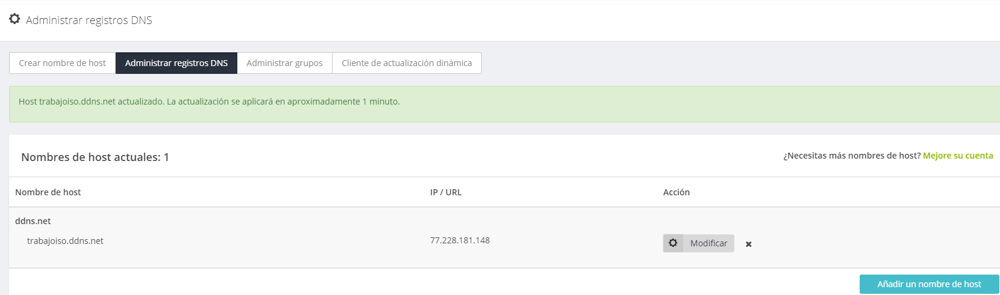

Esta es una breve presentación sobre el servidor web con Apache de Ángel Durán y Adrián Anselmo, alumnos de ASIR.
Un servidor Web es un programa que utiliza el protocolo de transferencia de hiper texto, HTTP, para servir los archivos que forman páginas web a los usuarios, en respuesta a sus solicitudes, que son reenviados por los clientes HTTP de sus equipos.
- Primeramente, como root, deberemos actualizar los repositorios (recomendable) con un apt-get update y un apt-get upgrade, todo esto dando por hecho que los repositorios de nuestro equipo están correctos.
- Una vez realizado este paso, ejecutamos el comando apt-get install apache2 (que es el nombre del paquete de apache).
- Una vez lo tengamos instalado, con teclear en nuestro navegador "localhost" ya podríamos acceder a nuestro servidor web.
¡Así de sencillo!
Para modificar la página de inicio de nuestro servidor, bastará con modificar el archivo llamado index.html que encontraremos en nuestro equipo (Debian) en la ruta /var/www/html
Para que las conexiones externas puedan entrar a nuestro servidor web, será necesario que accedamos a nuestro router (normalmente introduciendo en un navegador la IP de puerta de enlace) y abramos el puerto 80.
Una vez abiertos los puertos, desde el exterior se podría acceder a nuestro servidor web poniendo nuestra IP pública en un navegador.
Sin embargo, para hacerlo más sencillo, nos daremos de alta en un servicio DNS que nos relacione nuestra IP pública a un dominio.
En nuestro caso utilizamos el dominio trabajoiso.ddns.net
Una vez llegados a este punto, procederemos a acceder a nuestro servidor web.
Para ello iremos al navegador e introduciremos:
trabajoiso.ddns.net
https://searchdatacenter.techtarget.com https://www.noip.com